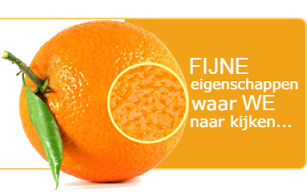
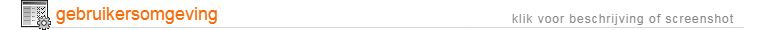

+65 97211032
info@ezypos.com
Wilt u gewoon een eenvoudige software om te factureren en na de dag een mooie eindafrekening te kunnen doen?
EzyPos Lite is de perfecte software voor eenvoudige zaken! Om nog maar te zwijgen over de lage prijs die EzyPos verkoopt, de functies zijn net zo uitgebreid als de pro-versie. U vindt alles wat u nodig heeft voor een klein bedrijf in EzyPos Lite.

